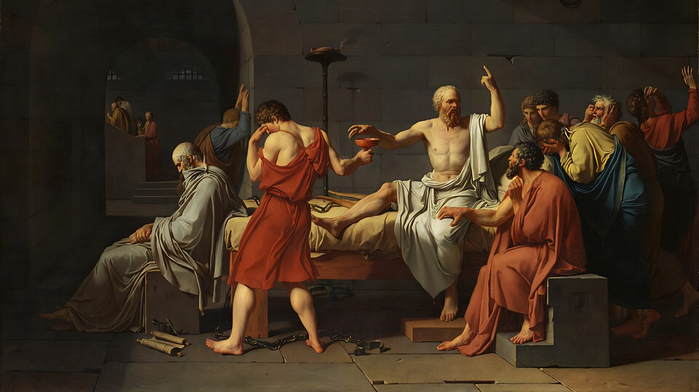

The Death of Socrates (English: The Death of Socrates) and (French: La mort de Socrate) is an oil painting created in 1787 by the French painter Jacques-Louis David.
This painting belongs to the Neoclassical movement, which was widespread in the 1780s, depicting themes from the Classical era. The painting portrays the execution of Socrates as recounted by Plato in his Phaedo.
Socrates did not deny the gods in his teachings or guidance, nor did he diminish their value. However, his opponents considered his teachings on self-knowledge and the pursuit of self-improvement to be an insult to the gods, which led them to accuse him of heresy and condemn him to death. They fabricated these charges against him because they began to feel the threat that Socrates' thought and teachings posed to their positions and interests. When his friend Crito suggested he escape from prison to appease his friends and followers, Socrates refused. He convinced Crito dialectically that escaping would be a betrayal of his teachings, and moreover, he did not want to violate the law, regardless of his opponents' stance. Thus, Socrates accepted death by suicide, submitting to the judges' judgment and fulfilling the law's decree. He calmly drank the hemlock and continued to impart his teachings to those who witnessed his tragedy until the very last moment, when he fell silent and passed away at the age of seventy in 399 BC.
Socrates is sometimes called the wisest man of the ancient world. After a brief stint in the arts, he turned to philosophy, immediately establishing himself as a thinker of great originality and creativity. He devised a method of inquiry and teaching consisting of a series of questions aimed at eliciting a clear and coherent expression of something assumed to be implicitly understood by all human beings.